Redis 概述
在我们日常的 Java Web 开发中，无不都是使用数据库来进行数据的存储，由于一般的系统任务中通常不会存在高并发的情况，所以这样看起来并没有什么问题，可是一旦涉及大数据量的需求，比如一些商品抢购的情景，或者是主页访问量瞬间较大的时候，单一使用数据库来保存数据的系统会因为面向磁盘，磁盘读/写速度比较慢的问题而存在严重的性能弊端，一瞬间成千上万的请求到来，需要系统在极短的时间内完成成千上万次的读/写操作，这个时候往往不是数据库能够承受的，极其容易造成数据库系统瘫痪，最终导致服务宕机的严重生产问题。
NoSQL 技术
为了克服上述的问题，Java Web 项目通常会引入 NoSQL 技术，这是一种基于内存的数据库，并且提供一定的持久化功能。Redis 和 MongoDB 是当前使用最广泛的 NoSQL ，而就 Redis 技术而言，它的性能十分优越，可以支持每秒十几万此的读/写操作，其性能远超数据库，并且还支持集群、分布式、主从同步等配置，原则上可以无限扩展，让更多的数据存储在内存中，更让人欣慰的是它还支持一定的事务能力，这保证了高并发的场景下数据的安全和一致性。
Redis 在 Java Web 中的应用
Redis 在 Java Web 主要有两个应用场景：
- 存储 缓存 用的数据；
- 需要高速读/写的场合 使用它快速读/写；
缓存
在日常对数据库的访问中，读操作的次数远超写操作，比例大概在 1:9 到 3:7，所以需要读的可能性是比写的可能大得多的。当我们使用 SQL 语句去数据库进行读写操作时，数据库就会去磁盘把对应的数据索引取回来，这是一个相对较慢的过程。如果我们把数据放在 Redis 中，也就是直接放在内存之中，让服务端直接去读取内存中的数据，那么这样速度明显就会快上不少，并且会极大减小数据库的压力，但是使用内存进行数据存储开销也是比较大的，限于成本的原因，一般我们只是使用 Redis 存储一些常用和主要的数据，比如用户登录的信息等。
一般而言在使用 Redis 进行存储的时候，我们需要从以下几个方面来考虑：
- 业务数据常用吗？命中率如何？ 如果命中率很低，就没有必要写入缓存；
- 该业务数据是读操作多，还是写操作多？ 如果写操作多，频繁需要写入数据库，也没有必要使用缓存；
- 业务数据大小如何？ 如果要存储几百兆字节的文件，会给缓存带来很大的压力，这样也没有必要；
在考虑了这些问题之后，如果觉得有必要使用缓存，那么就使用它！使用 Redis 作为缓存的读取逻辑如下图所示：
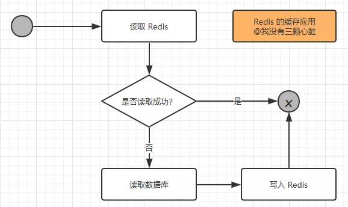
从上图我们可以知道以下两点：
- 当第一次读取数据的时候，读取 Redis 的数据就会失败，此时就会触发程序读取数据库，把数据读取出来，并且写入 Redis 中；
- 当第二次以及以后需要读取数据时，就会直接读取 Redis，读到数据后就结束了流程，这样速度就大大提高了。
从上面的分析可以知道，读操作的可能性是远大于写操作的，所以使用 Redis 来处理日常中需要经常读取的数据，速度提升是显而易见的，同时也降低了对数据库的依赖，使得数据库的压力大大减少。
分析了读操作的逻辑，下面我们来看看写操作的流程：
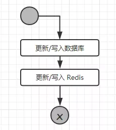
从流程可以看出，更新或者写入的操作，需要多个 Redis 的操作，如果业务数据写次数远大于读次数那么就没有必要使用 Redis 。
高速读/写的场合
在如今的互联网中，越来越多的存在高并发的情况，比如天猫双11、抢红包、抢演唱会门票等，这些场合都是在某一个瞬间或者是某一个短暂的时刻有成千上万的请求到达服务器，如果单纯的使用数据库来进行处理，就算不崩，也会很慢的，轻则造成用户体验极差用户量流失，重则数据库瘫痪，服务宕机，而这样的场合都是不允许的！
所以我们需要使用 Redis 来应对这样的高并发需求的场合，我们先来看看一次请求操作的流程图：
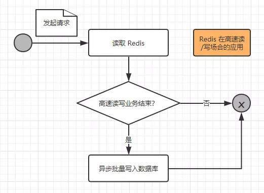
我们来进一步阐述这个过程：
- 当一个请求到达服务器时，只是把业务数据在 Redis 上进行读写，而没有对数据库进行任何的操作，这样就能大大提高读写的速度，从而满足高速响应的需求；
- 但是这些缓存的数据仍然需要持久化，也就是存入数据库之中，所以在一个请求操作完 Redis 的读/写之后，会去判断该高速读/写的业务是否结束，这个判断通常会在秒杀商品为0，红包金额为0时成立，如果不成立，则不会操作数据库；如果成立，则触发事件将 Redis 的缓存的数据以批量的形式一次性写入数据库从而完成持久化的工作。
Redis 的安装（windows）
Redis for Mac 安装可参考：Mac 安装配置 Redis
访问地址：https://github.com/ServiceStack/redis-windows/tree/master/downloads
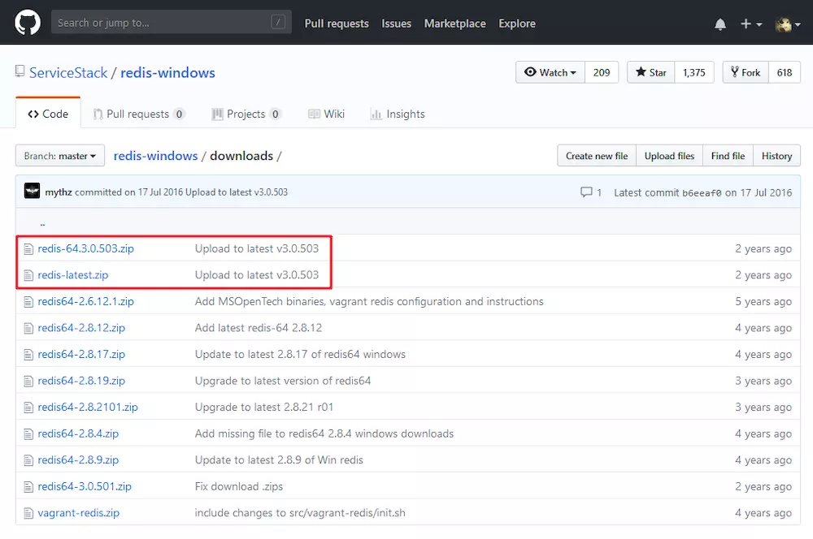
把 Redis 下载下来后找到一个合适的地方解压，就能得到如下图所示的目录（这里空格被替换成了%20…）：
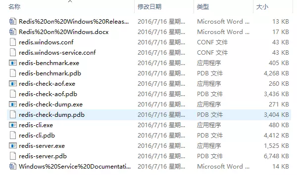
为了方便启动，我们在该目录下新建一个 startup.cmd 的文件，然后将以下内容写入文件：1
redis-server redis.windows.conf
这个命令其实就是在调用 redis-server.exe 命令来读取 redis.window.conf 的内容，我们双击刚才创建好的 startup.cmd 文件，就能成功的看到 Redis 启动：
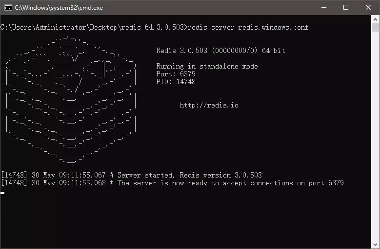
上图的提示信息告诉了我们：① Redis 当前的版本为 3.0.503；② Redis 运行在 6379 端口；③ Redis 进程的 PID 为 14748；④ 64 位。
我们可以打开同一个文件夹下的 redis-cli.exe 文件，这是 Redis 自带的一个客户端工具，它可以用来连接到我们当前的 Redis 服务器，我们做以下测试：
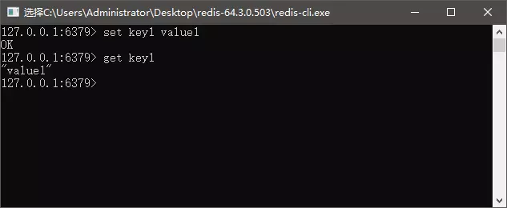
如此，我们便在 Windows 的环境下安装好了 Redis。
在 Java 中使用 Redis
添加 Jedis 依赖
想要在 Java 中使用 Redis 缓存，需要添加相关的 Jar 包依赖，打开 Maven 仓库的官网（https://mvnrepository.com ），搜索Jedis：
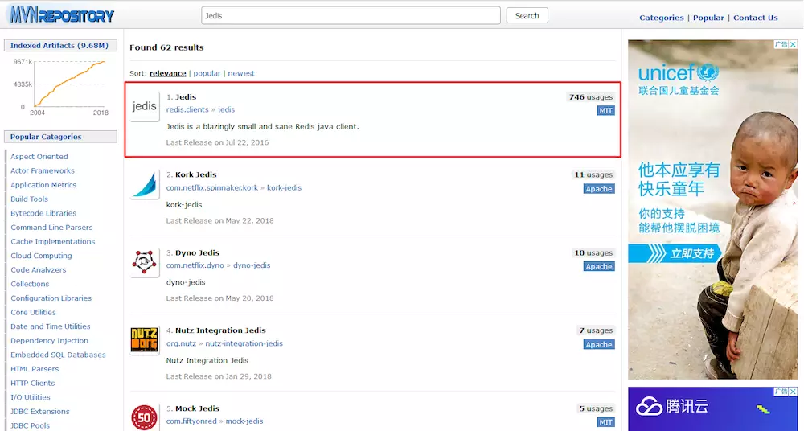
把它导入工程中去就可以啦，下面我们来对 Redis 的写入性能做一下测试：1
2
3
4
5
6
7
8
9
10
11
12
13
14
15
16
17
18
19
20
21
22
public void redisTester() {
Jedis jedis = new Jedis("localhost", 6379, 100000);
int i = 0;
try {
long start = System.currentTimeMillis();// 开始毫秒数
while (true) {
long end = System.currentTimeMillis();
if (end - start >= 1000) {// 当大于等于1000毫秒（相当于1秒）时，结束操作
break;
}
i++;
jedis.set("test" + i, i + "");
}
} finally {// 关闭连接
jedis.close();
}
// 打印1秒内对Redis的操作次数
System.out.println("redis每秒操作：" + i + "次");
}
//-----------测试结果-----------
//redis每秒操作：10734次
据说 Redis 的性能能达到十万级别，我不敢相信我的台式机电脑只有十分之一不到的性能，虽然说这里不是流水线的操作，会造成一定的影响，但我还是不信邪，我查到了官方的性能测试方法：首先在 Redis 根目录下召唤 Cmd（具体方法是按住 Shift 点击右键）
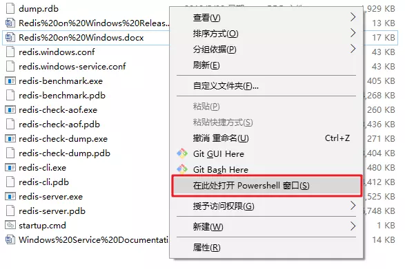
然后输入命令：redis-benchmark -n 100000 -q（来同时执行10万个请求测试性能）
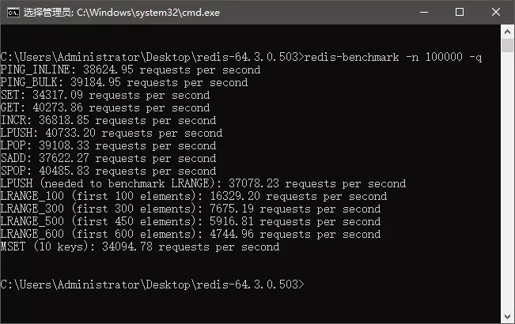
好吧，我同时在我的笔记本上测试了一下，结果更加惨淡…
使用 Redis 连接池
跟数据库连接池相同，Java Redis 也同样提供了类 redis.clients.jedis.JedisPool 来管理我们的 Reids 连接池对象，并且我们可以使用 redis.clients.jedis.JedisPoolConfig 来对连接池进行配置，代码如下：1
2
3
4
5
6
7
8
9
10
11
12
13JedisPoolConfig poolConfig = new JedisPoolConfig();
// 最大空闲数
poolConfig.setMaxIdle(50);
// 最大连接数
poolConfig.setMaxTotal(100);
// 最大等待毫秒数
poolConfig.setMaxWaitMillis(20000);
// 使用配置创建连接池
JedisPool pool = new JedisPool(poolConfig, "localhost");
// 从连接池中获取单个连接
Jedis jedis = pool.getResource();
// 如果需要密码
//jedis.auth("password");
Redis 只能支持六种数据类型（string、hash、list、set、zset、hyperloglog）的操作，但在 Java 中我们却通常以类对象为主，所以在需要 Redis 存储的五中数据类型与 Java 对象之间进行转换，如果自己编写一些工具类，比如一个角色对象的转换，还是比较容易的。但是涉及到许多对象的时候，这其中无论工作量还是工作难度都是很大的。所以总体来说，就操作对象而言，使用 Redis 还是挺难的，好在 Spring 对这些进行了封装和支持。
在 Spring 中使用 Redis
上面说到了 Redis 无法操作对象的问题，无法在那些基础类型和 Java 对象之间方便的转换，但是在 Spring 中，这些问题都可以通过使用 RedisTemplate 得到解决。
想要达到这样的效果，除了 Jedis 包以外还需要在 Spring 引入 spring-data-redis 包：https://mvnrepository.com/artifact/org.springframework.data/spring-data-redis
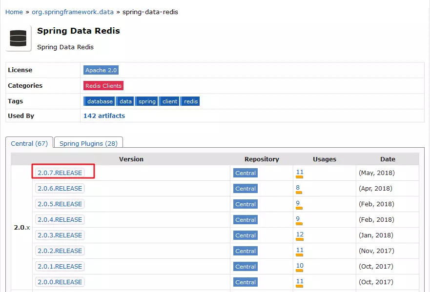
这里把 2.0.7 最新版本标红的意思是：别老想着使用最新的Jar包，特别是涉及到框架的一些东西，笔者用实际的操作体验告诉你们，引入该版本的包是会导致Jar包冲突的（也就是莫名其妙的错误），我乖乖换回了 1.7.2 的版本，代码就通了。我们来看看怎么做吧：
使用 Spring 配置 JedisPoolConfig 对象
大部分的情况下，我们还是会用到连接池的，于是先用 Spring 配置一个 JedisPoolConfig 对象：1
2
3
4
5
6
7
8<bean id="poolConfig" class="redis.clients.jedis.JedisPoolConfig">
<!--最大空闲数-->
<property name="maxIdle" value="50"/>
<!--最大连接数-->
<property name="maxTotal" value="100"/>
<!--最大等待时间-->
<property name="maxWaitMillis" value="20000"/>
</bean>
为连接池配置工厂模型
好了，我们现在配置好了连接池的相关属性，那么具体使用哪种工厂实现呢？在 Spring Data Redis 中有四种可供我们选择的工厂模型，它们分别是：
- JredisConnectionFactory
- JedisConnectionFactory
- LettuceConnectionFactory
- SrpConnectionFactory
我们这里就简单配置成 JedisConnectionFactory ：1
2
3
4
5
6
7
8
9
10<bean id="connectionFactory" class="org.springframework.data.redis.connection.jedis.JedisConnectionFactory">
<!--Redis服务地址-->
<property name="hostName" value="localhost"/>
<!--端口号-->
<property name="port" value="6379"/>
<!--如果有密码则需要配置密码-->
<!--<property name="password" value="password"/>-->
<!--连接池配置-->
<property name="poolConfig" ref="poolConfig"/>
</bean>
配置 RedisTemplate
普通的连接根本没有办法直接将对象直接存入 Redis 内存中，我们需要替代的方案：将对象序列化（可以简单的理解为继承 Serializable 接口）。我们可以把对象序列化之后存入 Redis 缓存中，然后在取出的时候又通过转换器，将序列化之后的对象反序列化回对象，这样就完成了我们的要求：
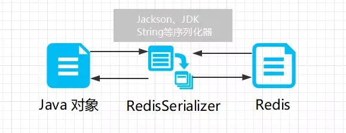
RedisTemplate 可以帮助我们完成这份工作，它会找到对应的序列化器去转换 Redis 的键值：1
<bean id="redisTemplate" class="org.springframework.data.redis.core.RedisTemplate" p:connection-factory-ref="connectionFactory"/>
笔者从《JavaEE互联网轻量级框架整合开发》中了解到，这一步需要配置单独的序列化器去支撑这一步的工作，但是自己在测试当中，发现只要我们的 POJO 类实现了 Serializable 接口，就不会出现问题…所以我直接省略掉了配置序列化器这一步…
编写测试
首先编写好支持我们测试的 POJO 类：1
2
3
4
5
6
7
8
9
10
11
12
13
14
15
16
17
18
19
20
21
22
23
24
25
26
27
28
29
30
31
32
33/**
* : @我没有三颗心脏
* : 2018-05-30-下午 22:31
*/
public class Student implements Serializable{
private String name;
private int age;
/**
* 给该类一个服务类用于测试
*/
public void service() {
System.out.println("学生名字为：" + name);
System.out.println("学生年龄为：" + age);
}
public String getName() {
return name;
}
public void setName(String name) {
this.name = name;
}
public int getAge() {
return age;
}
public void setAge(int age) {
this.age = age;
}
}
然后编写测试类：1
2
3
4
5
6
7
8
9
10
11
12
public void test() {
ApplicationContext context =
new ClassPathXmlApplicationContext("applicationContext.xml");
RedisTemplate redisTemplate = context.getBean(RedisTemplate.class);
Student student = new Student();
student.setName("我没有三颗心脏");
student.setAge(21);
redisTemplate.opsForValue().set("student_1", student);
Student student1 = (Student) redisTemplate.opsForValue().get("student_1");
student1.service();
}
运行可以成功看到结果：
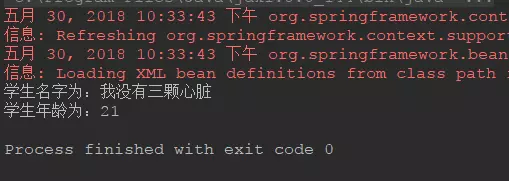
在 SpringBoot 中使用 Redis
在 SpringBoot 中添加 Redis 依赖
1 | <!-- Radis --> |
添加配置文件
在 SpringBoot 中使用 .properties 或者 .yml 都可以，这里给出 .properties 的例子，因为自己的 .yml 文件看上去感觉乱糟糟的：
1 | # REDIS (RedisProperties) |
测试访问
1 |
|
通过上面这段极为简单的测试案例演示了如何通过自动配置的 StringRedisTemplate 对象进行 Redis 的读写操作，该对象从命名中就可注意到支持的是 String 类型。原本是 RedisTemplate<K, V> 接口，StringRedisTemplate 就相当于 RedisTemplate<String, String> 的实现。运行测试，如果一切成功则不会报错，如果我们没有拿到或者拿到的数不是我们想要的 “111” ，那么则会报错，这是使用 Assert 的好处（下面是我改成 “112” 之后运行报错的结果）：
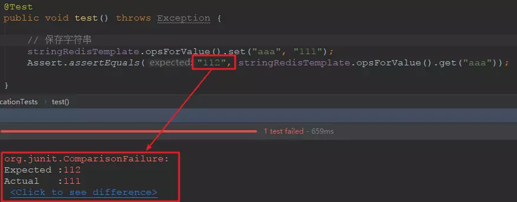
存储对象
这一步跟上面使用 Spring 一样，只需要将 POJO 类实现 Serializable 接口就可以了，我这里就贴一下测试代码：1
2
3
4
5
6
7
8
9
10
11
12
13
14
15
16
17
18
19
20
public class ApplicationTests {
private RedisTemplate redisTemplate;
public void test() throws Exception {
User user = new User();
user.setName("我没有三颗心脏");
user.setAge(21);
redisTemplate.opsForValue().set("user_1", user);
User user1 = (User) redisTemplate.opsForValue().get("user_1");
System.out.println(user1.getName());
}
}
仍然没有任何问题：
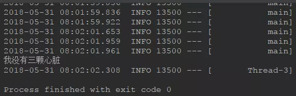
在 Redis 中操作集合
在 Redis 中操作 List
1 | // list数据类型适合于消息队列的场景:比如12306并发量太高，而同一时间段内只能处理指定数量的数据！必须满足先进先出的原则，其余数据处于等待 |
在 Redis 中操作 Hash
1 |
|
总结
在网上看到了关于 MySQL 的性能测试，读写操作大概就每秒1000以下的样子，而且这还和引擎相关，所以可以看出 Redis 确实能在性能方面帮助许多。
参考：https://www.jianshu.com/p/56999f2b8e3b
If you like this blog or find it useful for you, you are welcome to comment on it. You are also welcome to share this blog, so that more people can participate in it. If the images used in the blog infringe your copyright, please contact the author to delete them. Thank you !